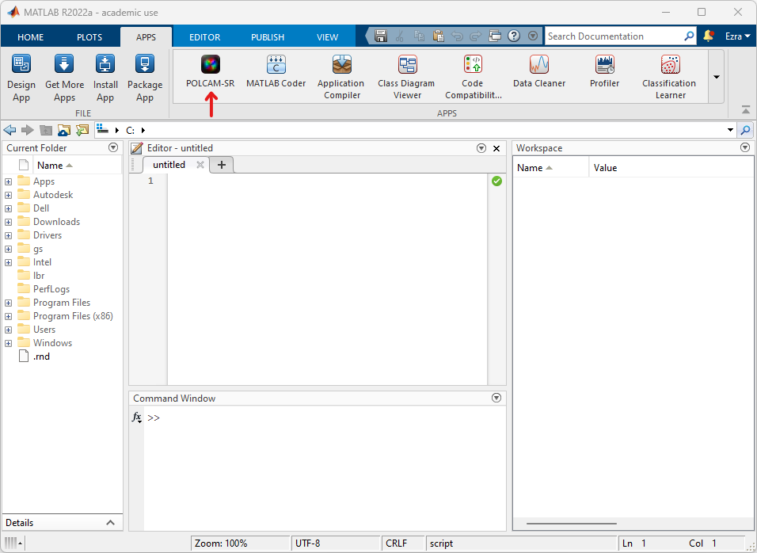
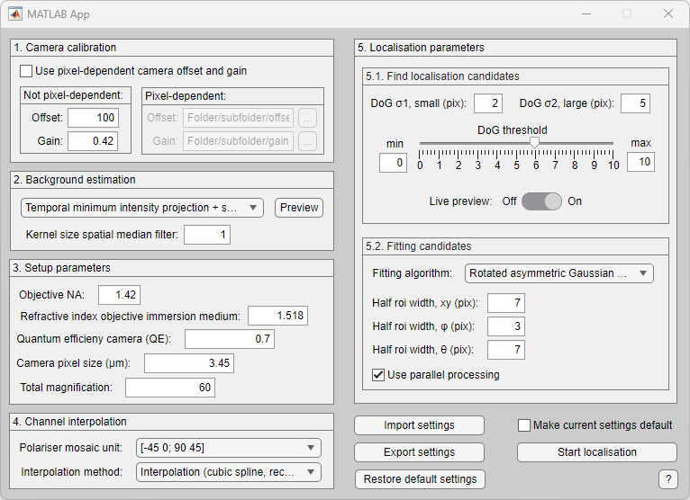
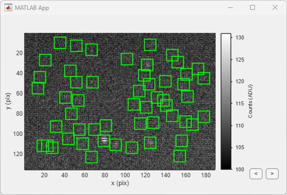
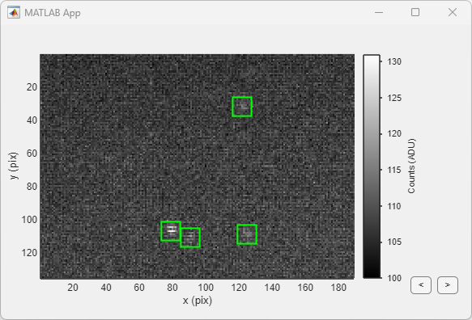
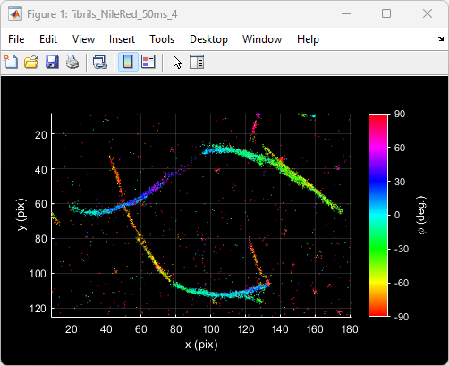
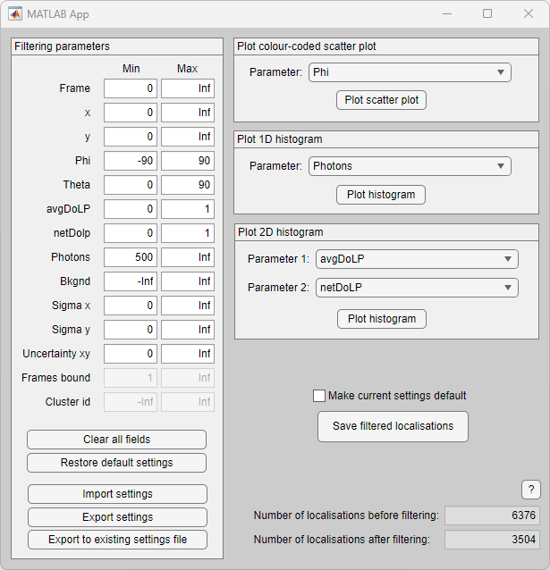
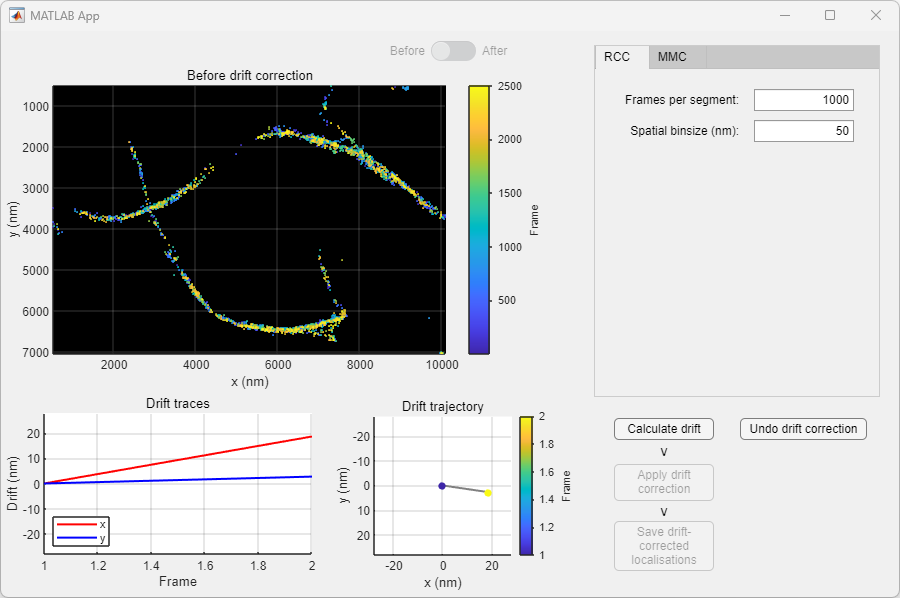

Software: POLCAM-SR
POLCAM-SR is a MATLAB application for processing, analysing and rendering single-molecule polarisation camera image data. The source code is available on github at https://github.com/ezrabru/POLCAM-SR
Download the latest stable installer here: Download installer
System requirements
- MATLAB license
- MATLAB Toolboxes: Parallel Computing, Optimization, Image processing, Curve fitting, Statistics and Machine Learning
- The software has been tested on Mac (macOS Monterey Version 12.6) and Windows (Windows 11 Pro Version 22H2) computers. The software was developed and tested using MATLAB version R2022a.
Installation guide
POLCAM-SR can be installed as a MATLAB App by downloading the installer and following the instructions. Click here to download the latest stable installer. After installation is finished, the app can be opened from the "APPS" tab in MATLAB (red arrow in screenshot below).
The typical install time on a standard desktop computer takes a few minutes. If you encounter any issues during installation, please email us at eb758@cam.ac.uk or report an issue on the github repository.
Demo
A test dataset (TAB-PAINT of alpha-synuclein fibrils using Nile red) is included in the installation of POLCAM-SR. The following are some instructions to walk the user through a typical data processing pipeline in POLCAM-SR using this test dataset.
-
Opening a dataset: In the POLCAM-SR app main window, select 'File > Open samples... > Fibrils' to open the testdataset (alternatively use the shortcut 'ctrl + shift + F'). A new window will open showing the first frame in the dataset. Clicking the arrow buttons on this window allows scrolling through the images (or use the left and right arrow keys on your keyboard).
-
Localisation and orientation estimation: Select 'Process > Single-molecule... > Localise' to open the localisation window. Localisation requires 5 classes of input parameters. For the test dataset the settings as displayed in the screenshot below can be used:
To see the candidate localisation that the software will pick out as an overlay on the image data, turn on "Live preview" in box 5 in the localisation window. Green boxes will mark localisation candidates that will be updated as the user changes settings (e.g. the DoG threshold slider). To start localisation, click the "Start localisation" button on the bottom right corner of the window. The progress will be shown on the main POLCAM-SR gui.
This is an example where the DoG threshold was set too low: 
This is an example where the DoG threshold was set correctly:
When localisation has finished, a results file will be saved in the same folder as the images and a new window will open showing a colour coded scatter plot of the dataset. By default the colour coding is the in-plane angle phi.
 -
Filtering: After localisation has finished, filtering can be applied to the localisations to remove e.g. localisations with less than 500 detected photons. To open the filtering window, select 'Process > Single-molecule... > Filter'. Minimum and maximum threhold values for different parameters can be changed in the "Filtering parameters" panel. To help with selecting thresholds, the data can be plotted as a colour coded scatter plot, 1D histogram or 2D histogram. To save a the filtered localisations, click "Save filtered localisations".
-
Drift-correction: The localisation can be drift-corrected by selecting 'Process > Single-molecule... > Correct drift'. This opens a new window that shows the (filtered) localisations as a scatter plot colour coded by the frame number (i.e. "time") to make it easy to see if there is any drift. Select RCC (redundant cross correlation) and set "Frames per segment" to 1000, and "Spatial binsize" to 50 nm. Click on "Calculate drift". When finished, the scatter plot wil display the drift corrected data. It is possible to toggle between displaying the localisations "before" and "after" drift correction using the toggle button. To accept this round of drift correction, click "Apply drift correction". The user can then choose to save the result (by clicking "Save drift-corrected localisations"), or apply more rounds of drift correction (by clicking "Calculate drift" again).
-
Visualization: Some tools are included in POLCAM-SR to generate formatted and colour-coded scatter plots of the localisations, generate histograms of different parameters and plot the localisation rate versus time. These tools can be accessed by clicking 'Analyse > Plot localisations...' and selecting one of the options.
By default the figure rendering theme in POLCAM-SR is set to 'dark' (black background). This can be changed at any time by selecting 'POLCAM-SR > Settings > Figure settings... > Theme'.

